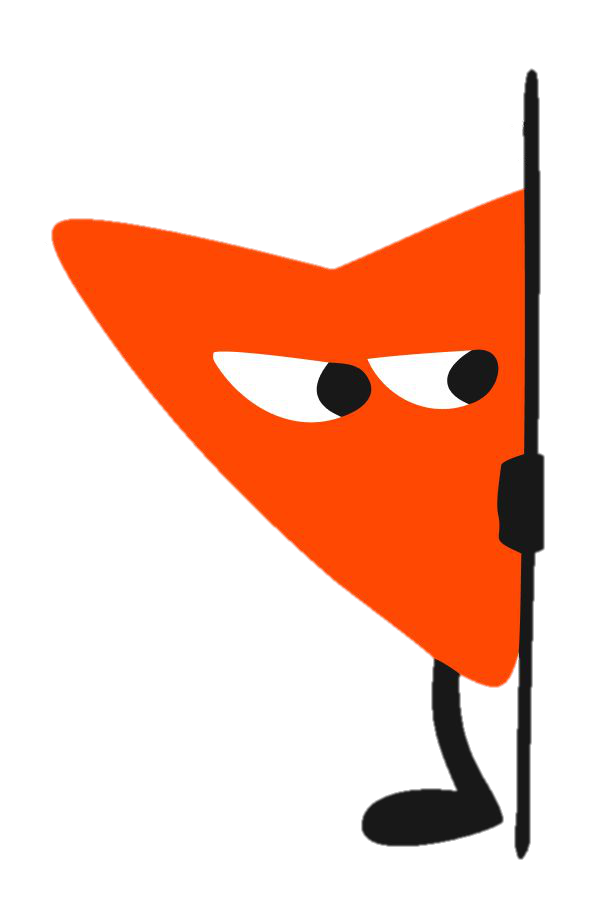
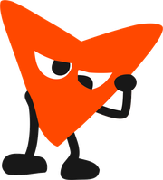
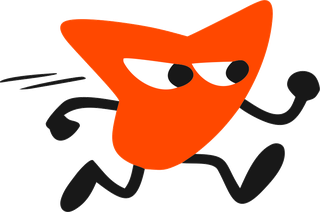
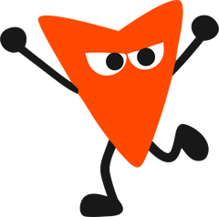

Мини-тест
на стратегическое мышление
Вы уже проходили тест на этом устройстве — открыть свою карту.
Мини-тест
на стратегическое мышление
Новость
Ветка комментариев 1 из 6
Повторное нажатие снимает номер.

Ваш комментарий
0 слов
Расставьте все 4

Отправлено
Читаем ваши ответы
Оценка ваших ответов обычно занимает около минуты, иногда до двух. Не закрывайте страницу.
Считаем расстановки…

Результат
Ваше стратегическое мышление
Это приблизительная картина: тест короткий — одна новость, 6 веток комментариев и 3 коротких ответа. Для полной оценки стратегического мышления рекомендуем пройти ассессмент i(m)perfect.
Чтобы вернуться к карте
Сохраните ссылку — по ней карта откроется снова, с любого устройства.
Результат сохранён. Ведущий видит сводку по группе, а некоторые комментарии может показать на экране — без имени.